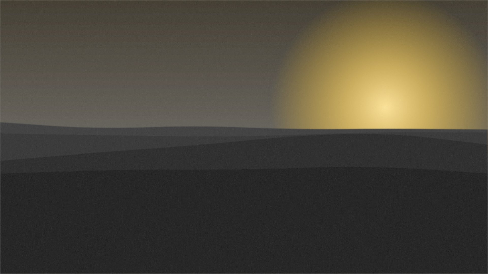
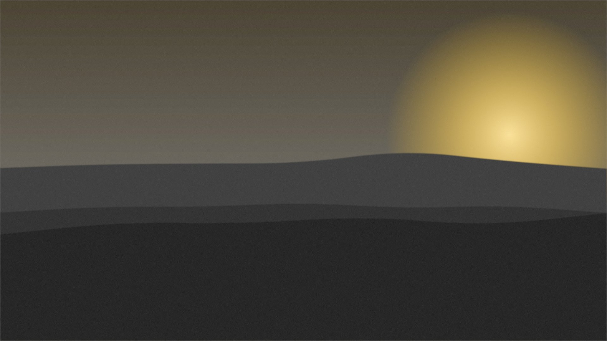
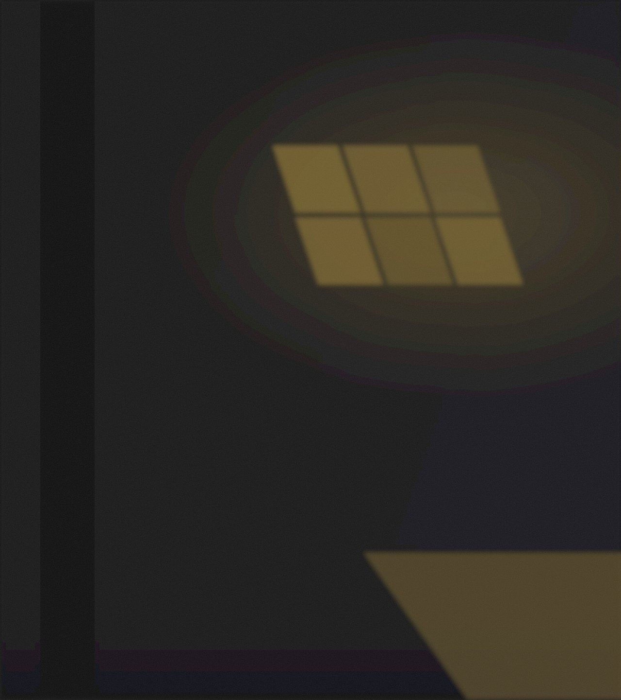
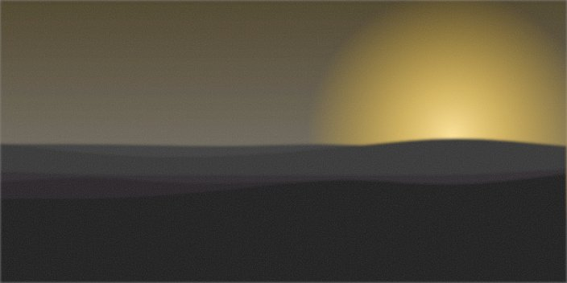
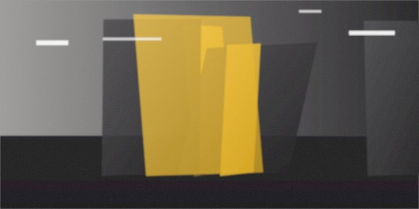
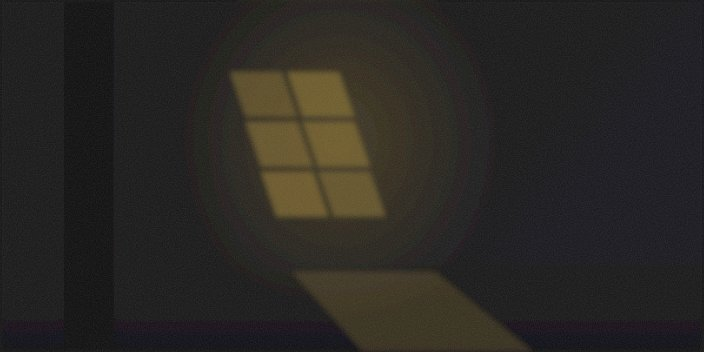
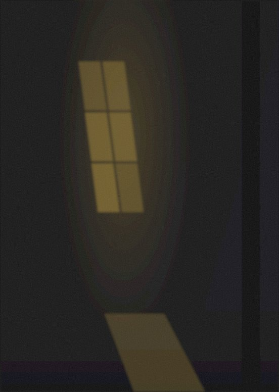
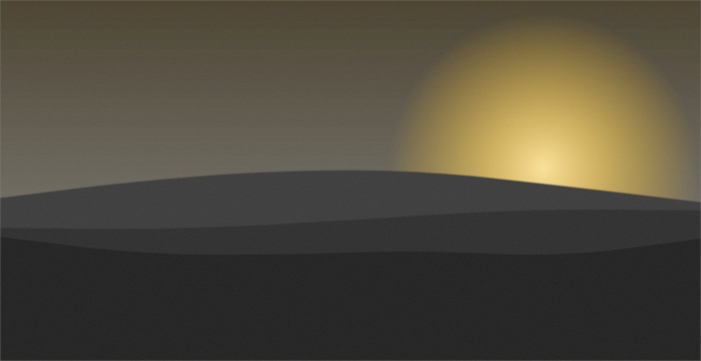
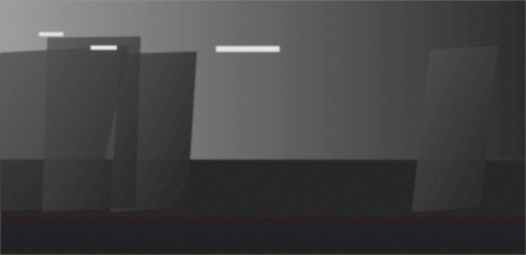
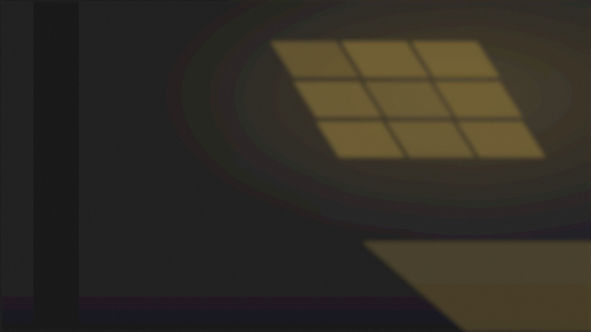

网页 PPT · 可编辑导出
浏览器里直接演示，再一键导出可编辑 PPTX、矢量 PDF 与逐页 PNG。
Contents.
01
十二种风格，开场先挑一种
02
先量后画，文字始终可编辑
03
十六条规则，错误清零才交付
04
从大纲到成稿的四步
2
— SKILL.md · 设计原则
3

01
Twelve ways to set a page.
第 1 部分 · 图为示意图
4
12 种风格 · 分五组：编辑排印、商务理性、舞台冲击、影像叙事、东方人文
A
杂志 · 暖纸
B
瑞士 · 网格
C
发布会 · 暗场
D
报刊 · 版面
E
大字报 · 粗野
F
柔和 · 产品
G
摄影集 · 画册
H
咨询 · 白皮书
I
日式 · 极简
J
拼贴 · 手账
K
新中式 · 东方
L
工程制图
来源：风格库 spec §2
5
Same content, new pages.
之前
三套设计系统共用 L01–L24，换一个主题文件整套换色，版面结构始终一样。
24
个版式，三套系统共用
现在
十二种风格各有一套版式，按角色登记；校验与导出只认角色，不认风格。
12
种风格，各有一套版式
来源：references/layouts.md（L01–L24）· 风格库 spec §1、§3.2
6

测量与导出
导出器先让浏览器把每一页排好，再逐个量出元素的位置、尺寸、字号与颜色，按同样的坐标写进 PPTX。
圆角、描边、阴影、旋转与竖排换成 PowerPoint 原生形状；画不出的装饰单独截图，文字始终可编辑。
导出原语：圆角矩形 · 直线 · 燕尾 · 旋转 · 阴影 · 竖排
图为示意图
7
第 1 步
风格决定版面，版面决定一页能放多少字。
图为示意图
8
Three promises, all checkable.



01
方向键翻页，F 全屏，S 打开演讲者控制台，讲稿只给自己看。
02
文字是原生文本框，形状是原生形状，交给同事也能接着改。
03
十六条规则查版式、字号、出处与导出一致性，错误清零才交付。
来源：SKILL.md 第 6、8 步 · 图为示意图
9
导出之前，先过十六道检查
16
R1–R16，从版式注册一路查到 PPTX 导出一致性
20
页面角色
3
导出格式
来源：scripts/validate.mjs · scripts/lib/roles.mjs
10
Sixteen rules, six concerns.
排版与几何
4
R3 · R4 · R7 · R9
版式与样式
4
R1 · R2 · R6 · R12
内容与数据
3
R5 · R8 · R14
可访问与媒体
3
R10 · R11 · R13
节奏
1
R15
导出一致
1
R16
来源：scripts/validate.mjs 规则注释（R1–R16），按守护对象分组
11
The fine print.
项目
规格
出处
画布
1280 × 720 px，导出时 px × 0.75 换算为 pt
assets/base.css
字号下限
16 px，溢出先删字、再换版式
validate.mjs · R4
校验规则
R1–R16，错误清零才能交付
validate.mjs
导出格式
PPTX · PDF · PNG，HTML 是唯一的源
SKILL.md
页面角色
20 个，其中 12 个核心角色
lib/roles.mjs
字体
SIL OFL 开源字体，按 deck 用字子集化
fetch-fonts.mjs
来源：表内「出处」列（本仓库文件）
12
From outline to deck.

01
看风格画廊，按场合挑一种，整份 deck 只用这一种。
02
按内容形状找角色，复制版式骨架，只换文字和图片。
03
查类名、字号、出处与导出一致性，错误必须清零。
04
一键得到可编辑 PPTX、矢量 PDF 与逐页 PNG。
来源：SKILL.md 工作流 · 图为示意图
14
From one system to a library.
07.16
07.18
08.17
08.18
10.08
锁定设计系统的网页 PPT，确定性导出。
第二套设计系统：思源宋、暖纸、朱砂。
规则覆盖全部元素，文字分段原生导出。
第三套设计系统，加入数据叙事版式。
十二种风格，版式独立。
来源：git log（2026-07-16 → 2026-10-08）
15
Seeded, repeatable, on palette.


来源：scripts/gen-art.mjs · 固定种子，输出可复现 · 三幅均为示意图
16

下一步
node scripts/new-deck.mjs my-deck --style keynote
风格画廊：docs/styles/index.html
图为示意图